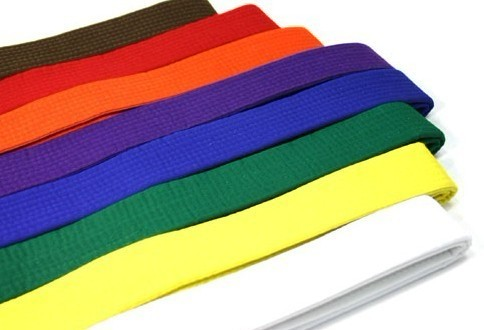
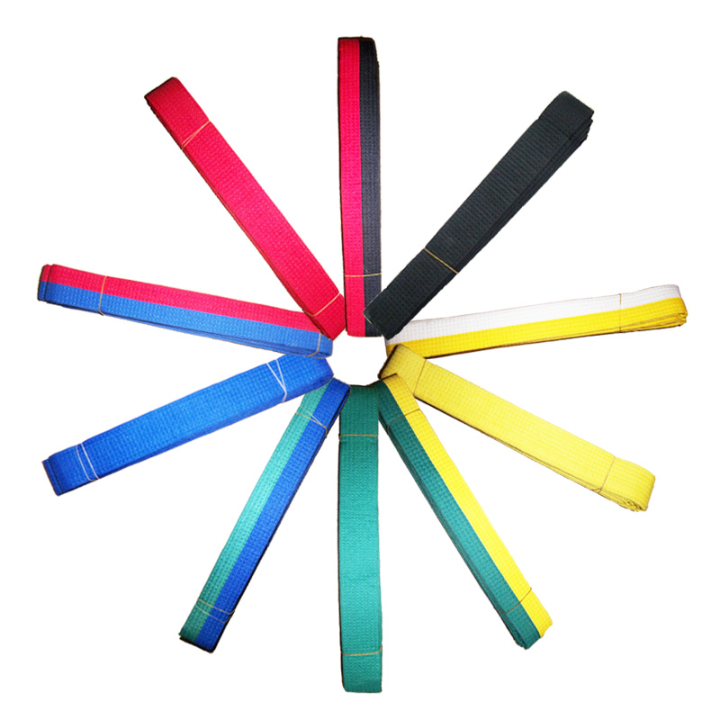

跆拳道有着严格的技术等级考核制度。修练者水平的高低，以“级”、“品”、“段”来划分。“级”分为10级至1级，10级水平最低，1级较高。1级以后入“段”，段位从低到高分为一至九段。未成年选手达到一至三段水平，则授予“一品”至“三品”。总称为“十级”、“三品”、“九段”。
跆拳道里腰带的颜色不同，代表着等级和象征意义也不一样。
一、各种颜色代表的等级：
白带（10级）、白黄带（9级）、黄带（8级）、黄绿带（7级）、绿带（6级）、绿蓝带（5级）、蓝带（4级）、蓝红带（3级）、红带（2级）、红黑带（1级、一品至三品）、黑带（一段至九段）。
二、各种颜色代表的含义
1.白带：白颜色，代表纯洁和洁净，代表着练习者练习跆拳道的目的是纯洁的，不是为了某些不正当的目的。同时也代表着练习者在跆拳道这一个新的领域还是一片空白，就像是一张白纸一样有待于添加内容。
白黄带：白颜色代表空白和纯洁，黄色代表大地，白黄带是一半白色一半黄色，这就代表着练习者已经开始接触跆拳道并学习了一些初级内容，两只脚已经踏上了跆拳道这块大地上了。
2.黄带：正如前面所介绍的那样，黄色代表大地，这个带位代表着练习者已经学习了一些入门级别的技术，就像大地一样，处在最底层，对于以后的内容的学习已经打好了基础。
3.黄绿带：黄色代表大地，绿色代表大地上生长的草木，这个带位一半黄色一半绿色，这就代表着练习者相对于上一个带位而言已经有了一定的进步，在原来的基础上又学习了新的内容，向更高的层次又迈进了一步。
4.绿带：绿色代表大地上生长的草木，相对于上一个级别而言，在这个带位的练习者已经学习了初级基础腿法和最基础的品势，水平已经提上了一个档次，这个带位是全绿色，这意味着练习者不再是只会练习初级内容的初学者了，现在已经可以尝试着学习中级内容了。
5.绿蓝带：正如前面所介绍的那样，绿色代表大地上生长的草木，那么蓝色就代表蓝天，这个带位一半绿色一半蓝色，它的含义是练习都在绿带的基础上又有了一定的进步，就是说大地上生长的草木又长高了，又向上面的蓝色接近了，这个就可以理解为练习者的水平又有了提高。
6.蓝带：蓝色代表蓝天，这个带位是全部蓝色的，这就代表着大地上的草木已经长到了一定高度，已经到达蓝色的高度了，那么，这个时候练习者的水平已经提高到了嘴的水平，已经具备参加实战的条件了。
7.蓝红带：如果蓝色代表蓝天的话，那么红色就代表天上的太阳，太阳代表着火热和激情，代红色也代表着威胁和危险，这个带位一半蓝色一半红色，它的含义是练习都已经开始接触高级水平内容，已经有一些攻击能力了。
8.红带：正如前面所说的那样，红色代表太阳，代表着火热与激情，但同时也代表着危险与威胁，这个带位水平的练习都已经具备一定的攻击能力，当别人看到这个带位的时候就得小心谨慎，同时对于练习者自己而言，这同样也是警告，因为对于这个带位的练习者而言，往往会产生自满和好斗的心理，认为自己已经学会了高级内容，误认为自己的水平已经很不错了，往往会出去显耀自己的实战能力如何如何。
因此，这个带位的练习应该在练习技术动作的同时也得加强精神思想方向的修养，以跆拳道精神为工具来约束自己的言行举止，不可惹事生非、以强歁弱。
9.红黑带：这个带位一半红色一半黑色，有人也把这个带叫做“半段”，因为下一个带就不是级别了，而是段位，所以有人把这个带位叫做“半段”。代表着练习都如果能通过刻苦的练习的话，有可能成为黑带练习者而进入全新的练习阶段。
10.黑带：黑色代表着宇宙，宇宙是无边无际的（最起码对于现在的科学水平来说是无边无际的），这代表着练习者以后的练习也是无止境的，因为这不仅仅是对于身体的锻炼，还是对于道德和思想上的磨炼。同时，黑色代表着黑暗与邪恶，这就时时刻刻提醒着练习者不要惧怕黑暗势力，要勇于和一切不正当的行为和人作斗争并作一个正直、正派的人。
